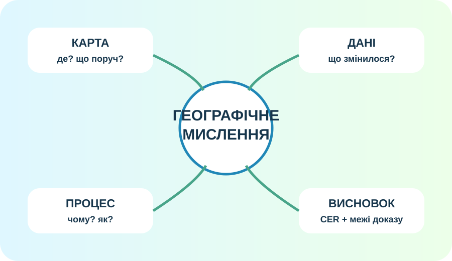
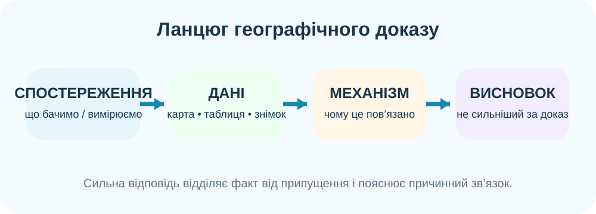

1. Старт: що таке «вміти географію»?

Реальне фото Землі з Apollo 17. Одного красивого зображення недостатньо для пояснення процесів — потрібні карти, вимірювання та причинні зв’язки.
Оберіть найсильнішу відповідь
Учень каже: «Я добре знаю географію, бо пам’ятаю багато назв». Чого бракує?

2. Станція «Земля як система»
Причинний каскад
Тривала посуха → зменшення рослинності → оголення ґрунту → ?
Власний ланцюг
3. Станція «Карта — це доказ, але не відповідь на все»
Реальна OpenStreetMap. Простежте водні об’єкти, дороги, забудову, зелені та відкриті ділянки.
Межа висновку
На карті поруч із річкою видно промислову територію. Який висновок коректний?
4. Станція «Супутник бачить зміни»

NASA Earth Observatory: часовий ряд супутникових спостережень показує зміну земного покриву між датами.
Що саме доведено?
NASA Earth Observatory ↗
Нічні вогні допомагають бачити просторовий слід людської діяльності, але не є прямим вимірюванням добробуту чи чисельності населення.
Доказова пастка
Дві області мають різну яскравість нічного освітлення. Чи можна одразу сказати, що яскравіша область «багатша»?
5. Станція «Географічне рішення»
Кейс: новий житловий квартал
Місто планує забудувати вільну ділянку біля малої річки. Потрібні житло й дороги, але територія частково вкрита рослинністю та поглинає дощову воду. Розподіліть 100 умовних балів між забудовою, зеленими зонами та водопроникними поверхнями.
Решта — водопроникні поверхні. Модель навчальна: вона показує компроміс, а не прогнозує реальну повінь.
Що треба додати до реального рішення?
Рельєф і висоти, ґрунти, водний режим, ризик підтоплення, транспорт, населення, природоохоронні обмеження та польові вимірювання.

6. Коротке відео: Земля вночі
NASA Goddard: нічне освітлення як один зі способів досліджувати людську діяльність.
Після перегляду
7. Теорія-опора — після діяльності
1. Географія пояснює простір
Вона відповідає не лише «де?», а й «чому саме там?», «як пов’язано?» та «що зміниться, якщо…?».
2. Земля — система
Літосфера, атмосфера, гідросфера, біосфера та антропосфера взаємодіють через потоки речовини, енергії та діяльність людей.
3. Джерело має межі
Карта, фото, супутниковий знімок чи таблиця показують лише частину реальності. Висновок не повинен бути сильнішим за дані.
4. Сильний висновок = CER
Claim — твердження; Evidence — конкретний доказ; Reasoning — пояснення, чому доказ підтримує твердження.
8. Фінальний CER
Теза для перевірки
«Людина є частиною географічної оболонки й одночасно силою, що здатна швидко змінювати природні комплекси».
9. Домашнє завдання
Фінальна рефлексія
Повторіть §§47–51. Оберіть одну реальну територію своєї місцевості й запишіть 3 речі: що можна побачити на карті; яке питання потребує польових/супутникових даних; який причинний зв’язок Ви хотіли б перевірити.
Електронний підручник / ВШО ↗За бажанням
Відкрийте NASA Earth Observatory або OpenStreetMap та знайдіть приклад, де одне джерело недостатнє для сильного висновку. Запропонуйте друге джерело.
OpenStreetMap ↗